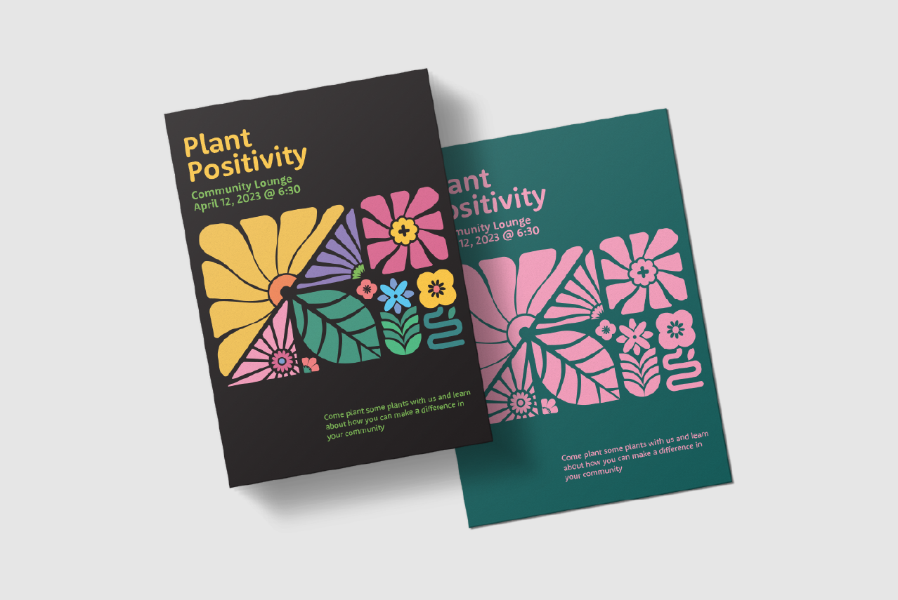

Plant Positivity
This is a poster set I created for an event that was hosted in the dorms at Western. I was inspired by the beautiful flowers that were growing all over campus at the time. What started as a simple doodle on Procreate became one of my favorite poster designs I have ever made!
